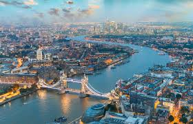
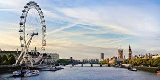
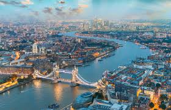
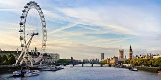

Il mio Viaggio a Londra
 



Le mie spese
| Numero |
Descrizione |
Costo |
| 1 |
Biglietto Aereo |
120€ |
| 1 |
Biglietto Aereo |
120€ |
| 1 |
Biglietto Aereo |
120€ |
| Totale |
360€ |
Cose da fare
- Visitare la Tower of London X
- Visitare Greenwich X
- Ascoltare un artista di strada a Covent Garden ✓
- Mangiare il tipico Fish and Chips inglese X
Info utili:
- Numeri utili di emergenza
- 999 - Emergenza
- 101 - Numero polizia
- 111 - Assistenza medica
- Hotel
- Nome hotel: Buckingham Palace
- Indirizzo hotel: Westminster, London SW1A 1AA, Regno Unito
- Aereo
- Volo di andata: YT234X, ore 9:30 da Milano Malpensa
- Volo di ritorno: YT236X, ore 18:30 da London Heathrow
Le foto